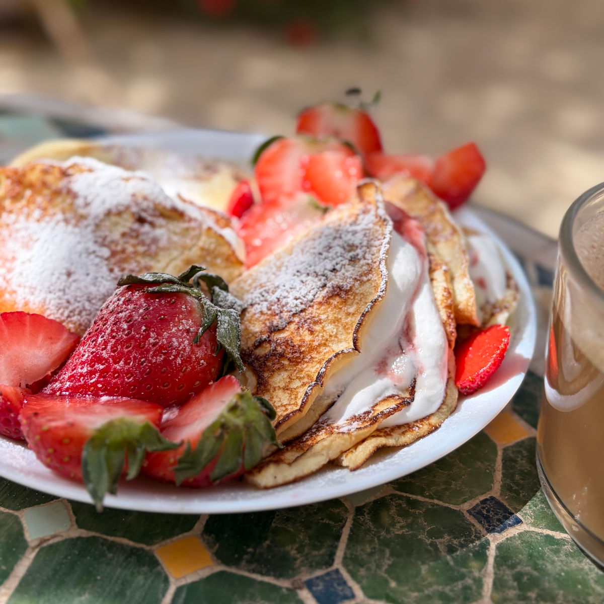
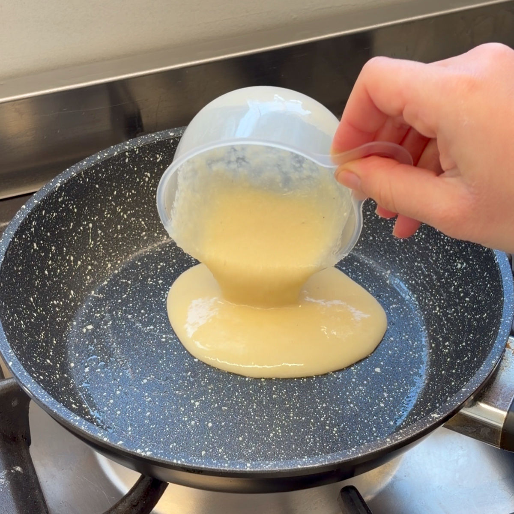
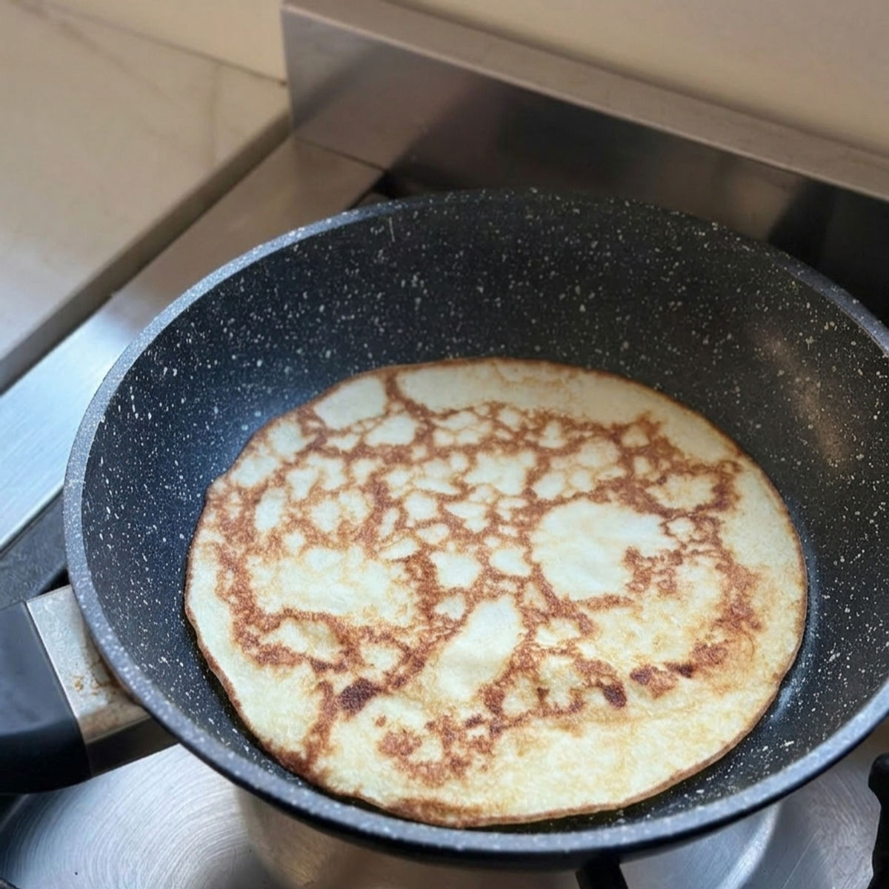

בלינצ'סים קלים ודלים בקלוריות
עודכן: 22 באפר׳
טבלת ערכים תזונתיים בקירוב:
שימו לב שזו טבלה עבור בלינצ'ס עם סוויטאנגו וחלב שקדים ללא סוכר עם 15 קלוריות ל100 מ"ל
| ערכים | בלינצ'ס אחד (32 גרם) | 100 גרם |
|---|---|---|
| קלוריות | 38.5 | 120.3 |
| פחמימות | 1.6 | 4.5 |
| חלבונים | 3 | 9.3 |
במשפחת טל, שבת בבוקר היא לא באמת שבת בלי ריח של בלינצ'ס טרי על השולחן. כשניסיתי לפתח גרסה בריאה לאתר אני מודה שקצת הסתבכתי. ואז הגיעה איילת, אמא של בן זוגי.
בסבלנות ובדרך ארץ, היא עלתה מהקומה למטה והביאה איתה את "קסם הבלינצ'ס". היא לימדה אותי בדיוק מתי להפוך, איך לזהות את הזהיבות המושלמת, ובעיקר נתנה לי את הביטחון לדייק את המתכון. יחד עם מבחן הטעימה הקשוח (והמהנה!) של צחי ואהובה טל, הגענו לתוצאה המושלמת: בלינצ'סים שחומים, יפים והכי חשוב – טעימים בטירוף. המתכון הזה מוקדש באהבה לאיילת ולמסורת של משפחת טל. תיהנו!

המתכון:
כמות: 6 בלינצ'סים - במידה ויש הרבה סועדים ניתן להכפיל כמויות
מרכיבים:
1/2 כוס חלב רגיל או חלב שקדים (120 מ"ל)
1/2 1 כפות קמח קוקוס (15 גרם)
2 ביצים L
1/2 1 כפות סוויטאנגו \ 2 כפות דבש (שימו לב: דבש אינו מתאים לסוכרתיים ולקיטוגנים)
כפית תמצית וניל
מעט שמן / חמאה לטיגון
הוראות הכנה:
טורפים היטב בקערה את החלב, קמח הקוקוס, הביצים, הממתיק (סוויטאנגו או דבש) ותמצית הווניל עד לקבלת תערובת אחידה.
מניחים לבלילה לנוח כ-3 עד 5 דקות. המנוחה קריטית כדי לאפשר לקמח הקוקוס לספוג את הנוזלים ולהתייצב.
בזמן שהבלילה נחה, מחממים מחבת קטנה על להבה נמוכה. שימו לב: השימוש במחבת קטנה ובחום נמוך הוא הסוד להצלחת המתכון ולמניעת התפרקות הבלינצ'ס בזמן ההיפוך.
לאחר המנוחה, טורפים את הבלילה פעם נוספת (מומלץ בעזרת מטרפה ידנית) כדי לוודא שהיא חלקה לגמרי, ומשמנים מעט את המחבת בחמאה או שמן (לא צריך הרבה שמן / חמאה).
יוצקים מהבלילה למחבת ומצטיידים בסבלנות: כדי להפוך את הבלינצ'ס בקלות, עליכם להמתין עד שהחלק התחתון זהוב מאוד והבלילה נראית יציבה ומבושלת לגמרי בחלקו העליון.
הופכים בזהירות לצד השני לטיגון קצר בלבד, וממשיכים הלאה לבלינצ'ס הבא.
כדי לצלחת כמו בתמונה מורחים את המילוי על חצי מהבלינצ'ס, מקפלים לחצי, מורחים שוב על רבע מהשטח ומקפלים פעם נוספת למשולש. כאן השתמשתי בחצי מיכל שמנת מתוקה שהקצפתי עם כפית אבקת סוכר סוויטנגו, ריבת תותים ללא סוכר, תוספת תותים טריים ומעט אבקת סוכר מעל (רעיונות נוספים מחכים לכם למטה בהערות).
הערות:
תוספות נחמדות לבלינצ'סים :
גבינה לבנה וריבה - ככה אוכלים אותם במשפחת טל
ריבה- יש לי מתכון פה באתר לריבות דלות בקלוריות-
ריבות שונות מפירות יער בפחות מ-30 דקות
פירות יער- תותים, אוכמניות, ופטל
יוגורט
אבקת סוכר סוויטאנגו
קצפת- שמנת מתוקה וכפית סוויטאנגו (מתאים למי שלא שומר על כמות קלוריות)
דבש / מייפל- אם אתם לא סוכרתיים או קיטוגנים (לא דל קלוריות / פחמימות)
סרטון מתהליך ההכנה:
לינק לסרטון קצר
תמונות מתהליך ההכנה:

העברת הבלילה למחבת

טיגון הבלינצ'סים